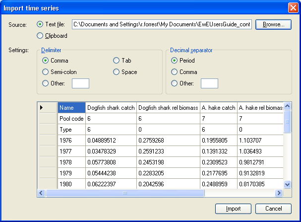

For historical comparison data, you can leave cells blank for which you have no data. Ecosim will assume that the first calendar year for which you enter a data row (e.g., 1976) is to be the simulation start year. Forcing time series must have an entry for every year of the simulation. Note that relative fishing rate by gear type must be scaled so relative value is 1.0 for the Ecopath base year (year for which catches are provided to Ecopath).
The spreadsheet must be identical in format as shown in Figure XX2 (i.e., cells 1-3 in the first column must read “Name”, “Pool code” and “Type” respectively and the years of the simulation must be listed below these in the first column). For each data series (column) you must enter the Ecopath group number (Pool code) and specify the data type (see list of data types below). You can use the first row (Name) to describe the group and the data. This information will be displayed on output graphs.
Overview of data types:
-1Force biomass (forcing) 0Relative biomass 1Absolute biomass 2Time forcing data (forcing) * 3Effort data by gear type (forcing) 4Fishing mortality, (F) by pool (forcing) 5Total mortality, (Z) by pool-5Forced total mortality (Z) (forcing) 6Catches-6Forced catches (forcing) † 7Average weight (stanzas only)
* Using data type 2, you can force nutrient concentrations (see Ecosim parameters and links therein); parameters that affect trophic interactions through abiotic factors (see Forcing function and Apply FF (consumer)) or primary production (see Apply FF (primary producer)).
† Forcing catches enables Use of Ecosim for Stock Reduction Analysis.
How to import a time series data file
Important note. After importing a time series file, you must activate the time series using the Time series form.
Note that you must already have an Ecosim scenario loaded before you can import a time series data file (see Ecosim menu for instructions for creating and loading Ecosim scenarios).
The Import time series dialogue box (Figure 8.8) allows you to load time series data stored in CSV (comma separated values) or similar text format. It can be accessed:
(i) from the Ecosim; or
(ii) from the Time series form (Import…).
To read in a data file, click Browse to locate your file or select it from the clipboard. You must then set the delimiter used to separate the values in the .csv or text file and the separator used as a decimal point. Your data will be displayed in the bottom window of the form (see Figure XX2). If everything looks as you expected it, click the Import button. If the data is not displaying as expected, first double-check that the Delimiter and Decimal separator settings are correct before checking that your file is in the correct format.

Figure 8.8.